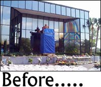

Milagro descubierto
El año pasado, visité el área de exhibición presentada por los Ministerios de los Pastores de Cristo fuera del que solía ser la oficina del banco de Clearwater, Florida, donde se decía un conjunto de paneles de ventana presentaban la imagen de (¡lo adivinaron!) la Virgen María. Se vendía toda clase de recuerdos, estampitas con plegarias, velas, medallas y amuletos. Estaba yo en la excelente compañía de Richard Dawkins y miembros del grupo Alianza Atea Internacional. Tomamos muestras del agua que se hallaba a nivel del suelo, que está llena de solutos minerales. Vean http://www.google.com/u/JREF?q=Clearwater&sa=Go%21 . Los paneles más altos de esa ventana sagrada fueron destruidos hace poco por vándalos, lo que le proporcionó a los medios una maravillosa oportunidad para escribir con extravagante entusiasmo sobre el milagro original, y —correctamente— quejarse sobre el vandalismo. Un párrafo en el periódico local decía:
Los expertos en vidrio creen que la imagen fue creado por una reacción química y la corrosión de los elementos metálicos en el revestimiento del metal, pero no pueden explicar por qué adoptó la forma que tenía.
Nunca me sorprende encontrar cuan mal informados están los periodistas (y los “expertos en vidrio” (?)). La así llamada “Virgen de Clearwater”, a la que yo llamo “Nuestra Señora de la Ventana Sucia”, llegó allí por el simple proceso que también decoloró todas las otras ventanas en torno al edificio. Es el resultado de rociar agua de pozo sobre las ventanas con el sistema de rociadores, que depositó una capa de óxidos metálicos allí, y luego por efecto de la reflexión de la delgada película depositada mostró un dibujo borroso semejante a un arco iris en el vidrio. La forma specífica de este dibujo fue producida cuando la cabeza de un rociador justo debajo de la ventana se desprendió, y el chorro de agua resultante se disparó hacia la parte superior de la ventana y chorreó hacia abajo, depositando sus minerales a su paso. Es significativo notar que cuando examinamos los caños que solían almacenar el sistema de alimentación pero ahora estaban desconectados, vimos que la boca en cuestión había sido tapada. Su trabajo ya estaba hecho. Una virgen, a pedido.
(Tuve que abrir subrepticiamente un candado en la bomba del sistema de bombeo para obtener nuestra muestra de agua, pero estoy seguro que el cielo me perdonará por esta leve inconducta.)
¿No les parece que quizá podrían haber asignado a un humilde ángel para proteger este sitio contra un acto tan poco bendito? Los llantos y quejas que siguieron causaron bastante inquietud entre los creyentes de Clearwater, pero tengo la solución perfecta. Ahora han puesto nuevos paneles de vidrio. Simplemente quiten el tapón del caño roto, y restauren el sistema de riego por un par de semanas hasta que el depósito químico se haya creado otra vez. Es así de simple. Cualquiera puede crear una virgen.
Se necesitan libros de ciencia
He aquí una causa que pueden apoyar. Donen sus libros de ciencia usados o que ya no necesitan y ayuden a mejorar las bibliotecas de los pobres. Reader to Reader, Inc., una caridad pública que recoge y distribuye libros gratis para las bibliotecas con problemas económicos a través de los Estados Unidos, necesita donaciones de lbiros de ciencia para las escuelas públicas que carecen incluso de los libros más básicos de todas las áreas de la ciencia. Desde su fundación en 2002, ha distribuido más de 35.000 libros en 75 escuelas. El sitio web del grupo tiene instrucciones para donar libros o dinero. Véalo en http://www.readertoreader.org/ 1
El museo de Lemmon es un limón 2
El lector Phil Bigelow nos cuenta:
Como Georgia estuvo en las noticias hace poco en relación con la Ciencia de la Creación, pensé que podría gustarle recibir información sobre un museo sin fines de lucro en Dakota del Sur que enseña activamente Ciencia de la Creación a la comunidad. El Grand River Museum, en Lemmon, Dakota del Sur, http://www.grandrivermuseum.org/, se presenta como un museo de ciencia legítimo. En su “Declaración de misión”, leemos:
El Grand River Museum es una institución sin fines de lucro, incorporada al estado de Dakota del Sur, y como una institución apoyada públicamente del tipo descrito en la sección 501(c)(3) del Código Interno de Rentas Públicas. El propósito del Grand River Museum es enfatizar la historia paleontológica, geológica y cultural de la región del Río Grande en Dakota del Sur […] y educar e informar al público en general acerca de la región por medio de programas de difusión […].
El problema es que el Grand River Museum no “educa e informa” al público en lo absoluto. Su página web inicial incluye un enlace a una página interna (del Grand River Museum) sobre preguntas y respuestas sobre la Ciencia de la Creación. También venden libros de Ciencia de la Creación en la tienda de regalos del museo. Una publicación en particular que mencionan se titula “Descubriendo los secretos de la Creación”. Su enlace “Paseo por los dinosaurios y los fósiles” tiene la siguiente cita de la Biblia en la parte superior de la página:
Y Dios el Señor formó de la tierra todos los animales y todas las aves, y se los llevó a Adán para que les pusiera nombre. Adán les puso nombre a todos los animales, y ese nombre les quedó.
¡Incluso auspician “Campamentos de Ciencia de la Creación”! Como puede ver, su sitio web está infestada con cháchara creacionista. La pregunta que tengo que hacerle es: ¿por qué las organizaciones sin fines de lucro exentas de impuesto pueden salirse con la suya y enseñar anticiencia al público general? ¡Esto es un ultraje!
Escuche a nuestro Presidente invocando a una deidad o una plegaria en cada uno de sus discursos, y quizá se le ocurrirá una respuesta…
Tome dos cucharas y llámeme por la mañana
El lector Barry McGuire está desconcertado. Al ver un anuncio de una “fiesta de doblamiento de cucharas” con el “investigador en psicokinesis” Jan Houck, y la nota que señala “Se pide a todos que traigan cinco cucharas”, pregunta: “¿Por qué cinco cucharas? Sólo se necesita una cuchara para servirse de buena gana tal superabundancia de insensateces”.
¿Mejor que nada?
El lector Kim Mccavit escribe:
Probablemente conozca usted esta nueva técnica de detección de mentiras, pero por las dudas, aquí tiene un enlace a un artículo en la revista EETimes. El artículo presenta esto como un producto creíble, pero parece que simplemente han repetido lo que dicen las compañías que lo fabrican. Una afirmación interesante es que la nueva técnica de análisis de voz tiene un 89% de exactitud en comparación con el 83% de efectividad de un detector de mentiras convencional. Así que aparentemente su técnica es un 6% mejor que algo que no funciona en lo absoluto…
Pueden ver esta maravilla en http://www.eetimes.com/at/news/OEG20040116S0046 . Mi opinión personal es que lo que aquí se describe se acerca mucho más a un método realista de detectar mentiras que la noción poligráfica. Necesitaré mucho más evidencia antes de poder hacer una evaluación correcta de la técnica.
Tome 20 minutos de luz roja y llámeme por la mañana
El lector Scott Harbaugh me escribe:
Me preguntaba si había escuchado usted sobre la acupuntura láser. Durante años escuché avisos radiales sobre una “clínica láser para dejar de fumar”. Siempre había asumido que “láser” era sólo una marca registrada de alguna clase de clínica para dejar de fumar; después de todo, ¿cómo un rayo de luz puede evitar que uno fume? Hace más o menos una semana escuché al pasar a dos personas que hablaban del sistema láser y cómo el amigo de una de las personas había dejado de fumar del día a la noche luego de x número de años, etc. Lo que me sorprendió, sin embargo, fue oír que el láser al que se hacía mención era un láser de verdad. El truco publicitario es que se lo proyecta en los puntos de la acupuntura, así que proporciona todos los “beneficios” de la acupuntura sin penetrar la piel. En este punto tuve que morderme la lengua para evitar reírme. ¿Escuchó sobre esto? A juzgar por el nivel de publicidad radial en esta área, asumo que debe ser un negocio exitoso.
Y, más importante: ¿por qué es tan especial la luz láser? Si tengo la luz encendida mientras me baño, ¿no obtengo un tratamiento de todo el cuerpo? ¿Y qué pasa si me tiendo en la playa? Ey, aquí hay una idea: un traje con agujeros ubicados estratégicamente para permitir que pase la luz sólo en puntos críticos. Quizá podría venderlos.

Scott obviamente no está al día con la pseudomedicina actual. La “Terapia de Fuerza Luminosa” es una gran idea que usa un simple banco de LEDs rojos que se ven fantásticos, convencen al crédulo de que se siente mejor, y hace cosas maravillosas en la cuenta bancaria de la compañía que lo vende por medio de numerosos avisos televisivos. ¡Y han rebajado el precio de su modelo SuperNova de USD 999 a USD 499! ¡No durarán mucho a ese precio! Su publicidad dice, astutamente, que
Los dispositivos de Terapia de Fuerza Luminosa han sido declarados seguros por la Administración de Alimentos y Drogas para el alivio temporal de dolores leves de músculos y articulaciones, espasmos musculares y rigidez, músculos doloridos y el dolor asociado con la artritis, y para incrementar la circulación local.
Ah, estoy seguro de ello. Nótese el uso de la frase “declarados seguros”. Eso significa que la FDA dice que son seguros para usar… ¡pero no que son efectivos! Es una fila de LEDs que apenas entibia el área cerca de la cual se ubica, ¡exactamente como lo hace una lámpara incandescente normal! Los vendedores lanzan la palabra “infrarrojo” y eso lo vuelve todo muy científico.
He sabido que el FTC y la FDA (¡siempre atentos!) cerrarán la operación en unos diez o doce años, quizá menos.
Seguro aterrador
Un lector anónimo del Reino Unido nos cuenta:
Mi suegra (que siempre está intentando curarme de mi escepticismo) me mandó un enlace sobre un producto que fue objeto de promoción en un artículo del London Evening Standard. Este periódico solía ser una fuente confiable de noticias para los londinenses (no era el New York Times, pero se le acercaba), pero recientemente cambió de dueños y desde entonces ha ido cuesta abajo. El enlace es http://www.thisislondon.com/lifeandstyle/health/articles/9425069?source=Evening%20Standard
Estoy bastante sorprendido. No sólo recomiendan sujetar saquitos de té de hierbas a los pies para curar resacas, sino que ese viejo cascajo, el Q-Link, también aparece. Aparentemente lo recomienda Madonna, y eso es lo bastante bueno para mí…
Posiblemente la mejor cuota se halla en la sección de “Zapatos Anti-Celulitis”: “Los cínicos pueden quedarse tranquilos ya que los quiroprácticos los recomiendan”. Me temo que eso me vuelve aún más cínico. Parece que después de todo no tengo remedio.
No lo tienes, no lo tienes. Ahora sólo la Cienciología puede ayudarte. ¿Tienes montones de dinero?
Abalorios místicos
Hay un sitio de “Creative Bead Designs” (“Diseños creativos de abalorios”) en http://cbdesigns.tripod.com/metaphysical_properties.htm, que exalta las virtudes de varias gemas y minerales, dando sus “propiedades metafísicas”. También nos cuentan que hacer abalorios de algunos materiales no es fácil:
Las gemas del tipo de diamantes, esmeraldas, rubíes y zafiros raramente se extraen para hacer abalorios ya que esto les resta valor.
Bueno, aparentemente para estos vendedores de sueños no es así. Los poderes del granate son prodigiosos: “Los granates rojos estimulan el flujo sanguíneo, asisten con la anemia, ayudan a combatir la despresión, estimulan la líbido y mejoran todas las áreas de la pasión. Los granates se consideran piedras afortunadas y protectoras, que promueven la fidelidad en el amor y la lealtad en los negocios”. ¡Caray! Para las “Perlas”, nos informan que “balancean las emociones, reducen la irritabilidad, y permiten que uno acepte el amor”. ¿Hablan en serio, o me perdí el chiste? ¿Las ostras están locas por el sexo?
Hey, querida, ¡estas perlas son para tí!
¡Caramba, funcionó! ¡Las perlas balancearon sus emociones, redujeron su irritabilidad, y en seguida ella también pudo entender mi punto de vista!
Casi lo logran
A fines de diciembre pasado en el pequeño pueblo de Darby, Montana (754 habitantes) un ministro bautista local envió invitaciones escritas a mano invitando a los residentes del pueblo a una reunión en el gimnasio de la escuela secundaria. Su tema, ilustrada con una sofisticada presentación en PowerPoint, era la enseñanza de la evolución en las escuelas locales. Bien, unas 200 personas de Darby y el condado circundante se presentaron. El ministro, como se esperaba, desafió la teoría de Charles Darwin. Esto de ningún modo fue una sorpresa, pero la respuesta subsiguiente de la audiencia seguro que lo fue.
Esta es una comunidad profundamente conservadora y religiosa. Pero en unos pocos días, un grupo de padres, gente de negocios, maestros, estudiantes y otros residentes se movilizaron para defender a Darwin contra el desafío que se había presentado. El grupo se autodenominó “Ciudadanos por la Ciencia del Condado de Ravalli”, y siguiendo la inspiración de gente como el Dr. Eugenie Scott, se ocuparon de las viejas mentiras que los creacionistas sacan a la luz para sembrar dudas sobre Darwin.
Fue tan efectiva que unos 50 estudiantes de la Secundaria de Darby hicieron una manifestación llevando pancartas con lemas tales como “No difundan el evangelio dentro de la escuela” y “Hagan huelga contra la ciencia de la creación”. Hay 39 estudiantes en la promoción que se gradúa este año. En una ciudad donde no sólo el jefe de policía sino también el alcalde, el diputado estatal, el director de la biblioteca y al menos dos de los cinco miembros del comité escolar dicen que tienen creencias creacionistas, este es un suceso verdaderamente sorprendente.
El predicador que empezó todo esto, quien concedió no tener conocimientos de ciencia, dijo que creía que la ciencia de la vida debería admitir la posibilidad de influencias sobrenaturales, las cuales dijo que la evolución no permitía. “En mi opinión, hay que admitir causas naturales y causas no naturales”, dijo. No es una declaración sorprendente de alguien que no ha tenido contacto con la ciencia.
Con el tiempo, hubo una votación preliminar del comité escolar que fue 3 a 2 a favor de agregar una revisión a la política de la escuela tal como lo sugirió el religioso, especificando que los maestros deberían “evaluar evidencia a favor y en contra” de la teoría de la evolución. Bruce Chapman, presidente del Instituto Discovery, acotó al respecto:
En el comité escolar de Darby, Montana, la cuestión es la misma que fue en Ohio y en algunos otros estados; es decir, ¿se les puede enseñar a los estudiantes sobre el creciente debate científico sobre la teoría de Darwin?
De qué “creciente debate científico” habla Chapman, no sé. Siguió diciendo que
Lo que en realidad apoya el gobierno federal es “libertad e investigación académicas” sobre las teorías científias, y eso debería estar claro ahora para cualquier observador imparcial.
Sí, está bastante claro para mí, señor Chapman. Debemos estar de acuerdo con esa observación, pero ya que el “diseño inteligente” no es en sentido alguno una “teoría científica”, la frase no se aplica a la situación de Darby, y aliento a aquéllos —¡especialmente los estudiantes!— que lucharon para establecer ese hecho.
En el momento en que “lanzamos la edición”, el Comité Educativo de Ohio acaba de votar 13 a 5 para permitir que el “diseño inteligente” sea parte de su currículum. Y las sangrías y sanguijuelas en la oficina de la enfermera también, seguramente.
Schwartz se chifla
Acabo de encontrar este archivo que estuve buscando en mi computadora proveniente del periódico Arizona Daily Star, evidencia adicional de que al doctor Gary Schwartz de la Universidad de Arizona puede que le falte un par de tornillos:
Tenía una teoría sobre las estrellas y la vida humana. El ex profesor de Yale, quien llegó a la Universidad de Arizona en 1988, desarrolló una teoría basada en la física cuántica. Se preguntó: si la energía y la luz de una estrella puede continuar en el universo mucho después de que la estrella hubiera muerto, ¿por qué lo mismo no puede ser cierto de la vida humana? Después de todo, la materia —aquéllo de lo que estamos hechos— es energía organizada. Y si la energía tiene cierto tipo de inmortalidad, ¿por qué nuestra propia conciencia no podría continuar mucho después de que nuestro cascarón físico ha muerto?
No puedo siquiera empezar a discutir la ingenuidad de esa noción. Seguramente Schwartz graznará que mi incapacidad de hacerlo es el resultado de mi abismal escasez de credenciales académicas, pero no es eso; es la tarea desalentadora de intentar discutir con un hombre supuestamente instruido que no puede pensar fuera de su limitada experiencia del mundo real. La “inmortalidad” de la energía no puede ser igualada de modo alguno con la “conciencia”, que es un diseño una construcción, un sistema organizado funcionando; no una simple fuerza. Sería como comparar un cubo de hielo con una pintura de Vermeer. No, no seguiré intentándolo.
¿Quién fue el que me dijo que alguna gente está educada mucho más allá de su inteligencia?
Proteja sus menjunjes
El número de abril de 2004 de la revista “Travel America” dirige un artículo a los ancianos en su sección sobre la jubilación:
BOLSOS DE VIAJE SEGUROS
A los mayores les encanta viajar y con frecuencia llevan medicamentos con ellos. La investigación muestra que los potentes analizadores actuales de rayos X de los aeropuertos pueden afectar medicamentos, especialmente los medicamentos homeopáticos porque contienen diminutas cantidades de ingredientes activos que son más suceptibles a la radiación ionizante de los analizadores de los aeropuertos. Sima Products Corproation, la principal fabricante de bolsas protectoras de películas para rayos X (FilmShield) ha desarrollado los bolsos Travel Safe para llevar medicamentos por los aeropuertos. Los bolsos fuertes y resistentes a pinchazos tienen una gruesa capa protectora contra los rayos X así como una capa interior de un compuesto de bario para agregar protección. Los precios de los bolsos van entre $9,99 y $29,99. Para más información o para realizar su compra, llame al (800) 345-7462 o envíe su e-mail a info@simacorp.com.
Chicos y chicas, repitan conmigo: “pseudociencia”.
Otra vez Day
Mi reciente artículo sobre la doctora Lorraine Day produjo varios mensajes de que debería haber enviado a los lectores a un sitio donde se habla de ella: http://www.quackwatch.org/01QuackeryRelatedTopics/Cancer/day.html. Este sitio lo publica el doctor Steve Barrett, quien también se ocupa muy bien de las afirmaciones sobre la plegaria de Day, como era de esperarse.
Se hunde la pirámide
Recordarán que la pirámide de USD 145.000 que diseñó Uri Geller para la compañía “Ultraframe” del Reino Unido. Pueden verla en randi20030815.html. Parece que las acciones en esa compañía se movieron un 15% desde el sorprendente anuncio… 15% hacia abajo. Pero el pabellón “Bienestar”, descrito por los fabricantes como “Un espacio tanto poderoso místicamente como matemáticamente significativo” (?) tuvo una venta. A Uri Geller.
Decídete, Zammit
El extraño Sr. Zammit, mencionado la semana pasada, se quejó de que nadie, en especial yo, quiere evaluar al “psíquico” Chris Robinson del Reino Unido. Bien, Susan Blackmore lo evaluó, y falló, pero Zammit siguió quejándose. Ahora estamos acercándonos al acuerdo sobre el protocolo para otra serie de pruebas, y ¡acabo de saber que Zammit está advirtiendo a Robinson que no acepte ser probado! ¡Explique eso, si puede!
Algo que aprender
El lector Bob Levine:
Quería hacerle llegar una nota para decirle cuán amravilloso es encontrar a alguien que parece ver a través de la bruma de la insensatez que parece rodearnos en estos días. Sus opiniones sobre la religión, la mística, la medicina de la nueva era, etc., son un soplo de aire fresco. Durante muchos años he tenido un interés entusiasta en lo sobrenatural, OVNIs, la criptozoología, etc. Tristemente, después de estudiar todo el material que pude hallar en el curso de mis 46 años he concluido que todos esos materiales sólo nos dan conocimiento de la naturaleza humana y las fallas de la observación humana. Todavía tengo un fuerte interés en cualquier fenómeno que parezca violar nuestras leyes naturales conocidas de la física y redefinir nuestra comprensión de nuestro universo. Tristemente, no creo que alguna vez tengamos una prueba de nada de ello durante lo que dure mi vida, sólo las mismas pinturas borrosas y granuladas dl tipo que dice: “Debería usted haberlo visto”.
Gracias de nuevo por recordarle a la gente que creer en cualquier poder sobrenatural, ya sea organizado o de otra manera, es una movida lateral en el cuadro informativo y a veces es mejor decir “No sé” que ahuyentar con explicaciones los misterios de la vida al inventar historias.
P.D.: Si esta gente quiere explorar algunos misterios verdaderos deberían estudiar mecánica cuántica, no hay nada más extraño que eso.
P.D.2.: Lo recuerdo en Wonderama con Sonny Fox cuando yo era joven.
Bob me recuerda: todavía estoy tratando de ubicar a Sonny (Irwin) Fox, quien según entiendo aún está activo e involucrado con temas sociales. ¡Ah, parrandear con él de nuevo!
Tengo una listita
Al fin, he aquí una lista de los 178 aspirantes aún activos al premio de la JREF. Pero no todos están representados aquí. Tenga en cuenta que rehusamos aceptar pseudónimos, escribiendo para pedir identificación correcta; muchos de éstas nunca fueron respondidas. Cierta cantidad de presentaciones no tenían identificación en lo absoluto, no fueron notarizadas, y no tienen una fuente u origen.
Algunas presentaciones eran simplemente ilegibles, y entraron en un archivo etiquetado, apropiadamente, “Ilegibles”. La gente del Reino Unido parece preferir no poner en el sobre sus direcciones de returno, lo que podía habernos permitido lograr deducir un nombre o dirección; esos están en la tierra de nunca jamás. Tenemos algunos con escritura Cirílica, algunos en Japonés y algunos en Griego. Estos no son considerados simplemente porque no podemos costear que nos hagan traducciones; y, además, las reglas piden comunicación en inglés, sin excepciones. Un aspirante escribió todo en minúsculas, usó el “nombre” “MJE”, y nos proporcionó varias páginas de reglas propias, junto con una revisión completa de las doce reglas orginales. Dijo que nos probaría que “los fenómenos psíquicos son reales”. Esperaba con confianza que los medios estuvieran presentes en grandes cantidades para presenciar su victoria, pero no estaba dispuesto a llenar el formulario de aspirante. Su presentación está en el archivo de “Cerrados”, tal como la de alguien (hombre o mujer) identificado sólo como “Omega”, una persona que dijo que él o ella podía curar la enfermedad conocida como “herpes”.
Esta tengo que contárselas: alguien nos envió el sobre estampillado y con el destinatario ya escrito según lo solicitamos, pero estaba dirigido a la JREF, ¡no a él! Uno se pregunta si esta gente alguna vez usa la razón al manejar el mundo real…
Aquí hay algunos nombres que puede que reconozca. Y puede haber aspirantes cuyo período de validez aún no ha expirado; el desgaste nos libra de aquéllos del tipo de Thomaz Green Morton, el brasileño fanfarrón que hizo que su abogado nos escribiera pomposas notas llenas de demandas resonantes que por supuesto ignoramos. Helas aquí:
|
Allen, F. Allen, T. Ambicki, D.J. Archibald, L. Atkinson, R. Balant, F. Baro, C. Beeson, W.R. Bekader, B. Bergeron, M. Bethke, D.P. Bialoblochi, J.L. Boldt, L. Bostrom, E. Bowen, K. Brown, R. Bryan, D.K. Burke, M. Bussard, M.P. Bussie, A. Butler, J.C. Callecod, D.C. Carey, P. Casillas, A. Cemachev, A.N. Cempel, Z. Cepeda, M.P. Chadwell, T. Champagne, G.M. Chan, C.F. Chandrasekar Chodrick, N. Colby, T.W. Cooper, G. Correa, C.P. Curtis, G.E.S. Dannenhauer, E. Davidson, R. Dawson, R. Deconing, W. DeHart, T. DeLeon, G. Delk-El, S. DePadua, D. DePriest, D. Diaz, R.A. Donovan, A.G. Exner, F. Fatica, J. Fidalgo, C. Filkevitch, I. Finlay, B. Forlini, G. Frame, D. Gardner, K. Gessner, M. Gillis, P. Gilmartin, M. Goergen, J. Goldsmith, C. |
Greenwood, G. Griffith, C. Gusev, V. Hadipoernomo, Y.S. Hauge, K. Heyndrichs, E. Hirschgänger, H.J. Hoggarth, D. Horbatiuk, V. Hsing, K.J. Hugo, A. Jam-Tibor, P. Jennings, E.H. Johnson, C. Jones, C.S. Jumat, A.I.H. Junghan, B. Khan, N.U. Khudyakov, H. Kim, D.S. Kim, Y.H. Kirchen, K. Knowles, G. Kosina, J. LaReau, S. Lee, T. Lengruber, R. Liang, L.Z. Liverpool, R. Long, R. Lopez, A.M. MacRea, A. Magan, G. Magola, M. Maguire, J.N. Maheshri, J.C. Masailo Mbilitem, A.N. McDavid, W. Melvey, H. Meziane, G. Miller, M. Milton, D.W. Minguez Minic, M. Miskelly, M. Mohamed, E.A. Molloy, D.M. Moore, J. Morton, T.G. Moss, T. Nguyen, A. Nygate, J. Parkin, M. Patino, G.S. Payson, D. Pinkard, V. Polyakova, T. Porodnov, I. |
Poullo, N.V. Powell, M. Preuss, H. Provo, M. Quesenberry, L.W. Quice, M. Radovcic, R. Rao, P.V. Ray, G. Reefman, W. Rees, J.B. Rubenstein, M. Rudder, R. Saatori, E. Sabaliauskas, V. Sailo, M. Sautu, A. Schepp, L. Schofield, E. Schroeder, L. Seifoori, A. Shipp, R. Silverman, R. Sim, J.G. Sims, A. Smith, B.J. Smith, L. Solomin, V. Solomon, R. Stage, E. Sturdivant, J.T. Sugiyama, H. Sula, J. Sulub, A. Sundor, A. Szembek, S. Taguch, S. Tikari, K.J. Tippett, C. Trachuk, K. Trofimowa, T. Ukraine, G.Y. Valentine, J. Vela, H. Waire, K. Walters, D. Ward, P. Waterhouse, M. Watson, G. Weatherford, V. Wibeto, T. Wright, D.A. Wright, T.H. Xi, J. Yuen Zaharov, A. Zaragoza, J.P. Zizic, V. Zwierzyna, A. |
Para cerrar
Sospecho que la página de la semana que viene puede ser un ensayo que escribí sobre la naturaleza de la ciencia, y nada más. Veremos…

Notas
- 1
-
Puede haber iniciativas similares en su país. Si puede, participe en una de ellas. Sospecho que los países del Tercer Mundo de habla española pueden necesitar tanto o más que los Estados Unidos este tipo de ayuda. [N. del T.]
- 2
-
En inglés, una de las acepciones de lemon (limón) es “(jerga) persona o cosa considerada inútil o defectuosa”. [N. del T.]
Comentarios
Comments powered by Disqus